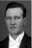

Sven Gunnar Hedlund
Hemmansägare i Ersmark, Kågedalens fs, Skellefteå sn. Blev 40 år.
| Född: | 1905-10-15 Ersmark, Skellefteå sn. [1] | Nöddop damma dag. Arb. Karl Karlsson Hedlund f.1871-01-08 och h.h. Klara Josefina Holmlund f.1866-10-22. |
|---|
| Levde: | 1910 Ersmark, Skellefteå sn. [2] | |
|---|
| Död: | 1946-06-16 Örviken, Skellefteå lfs, Skellefteå sn. [3] | |
|---|
| Begravd: | 1946-06-23 Skellefteå lfs, Skellefteå sn. [3] | Skellefteå Gravkapell. |
|---|
| Vigsel: | 1931-12-13 Ersmark, Skellefteå lfs, Skellefteå sn. [4] | Sven Gunnar Hedlund, Arb. i Bureå och Elsa Kristina Wikner i Ersmark. Attest till Bureå 1932-01-12. |
|---|
| Omflyttad till: | 1932-01-19 Bureå fs, Skellefteå sn. [5] | |
|---|
Personhistoria
| Årtal | Ålder | Händelse |
|---|
| 1905 |
|
Födelse 1905-10-15 Ersmark, Skellefteå sn [1] |
| 1907 |
1 år |
Makan Elsa Kristina Vikner föds 1907-09-12 Ersmark 15, Svidihemmanet, Skellefteå sn [6] |
| 1910 |
|
Levde 1910 Ersmark, Skellefteå sn [2] |
| 1910 |
4 år |
Brodern John Ossian Hedlund föds 1910-01-22 Ersmark, Skellefteå lfs, Skellefteå sn [2] |
| 1927 |
21 år |
Brodern Karl Manfrid Hedlund dör 1927-08-24 Ersmark, Skellefteå lfs, Skellefteå sn |
| 1931 |
26 år |
Vigsel Elsa Kristina Vikner 1931-12-13 Ersmark, Skellefteå lfs, Skellefteå sn [4] |
| 1932 |
26 år |
Omflyttad till Elsa Kristina Vikner 1932-01-19 Bureå fs, Skellefteå sn [5] |
| 1932 |
26 år |
Sonen Bernt Gunnar Hedlund föds 1932-04-18 Skellefteå lfs, Skellefteå sn [7] |
| 1933 |
28 år |
Sonen Roland Napoleon Hedlund föds 1933-11-17 Ersmark 15:8, Kågedalens fs, Skellefteå sn [8] |
| 1946 |
40 år |
Död 1946-06-16 Örviken, Skellefteå lfs, Skellefteå sn [3] |
| 1946 |
|
Begravning 1946-06-23 Skellefteå lfs, Skellefteå sn [3] |
Källor
| [1] | Skellefteå lfs C:21 (1905-1906) 533/1905 fol. 100 k.3/9, AIIA:2 (1900-1910) fol. 92 k.3/9 |
| |
| | |
| [2] | Skellefteå lfs AIIA:2 (1900-1910) fol. 92 k.3/9 |
| |
| | |
| [3] | NV - Dödsannonsregistrering 1946-06-18 |
| |
| | |
| [4] | SCB Vigda AC Skellefteå lfs 176/1931 k.3/6 |
| |
| | |
| [5] | Skellefteå lfs AIIA:25 (1926-1932) fol. 85 k.3/8 |
| |
| | |
| [6] | Skellefteå lfs C:21 (1907-1908) 427/1907 fol. 255 k.6/9, AIIA:2 (1900-1910) fol. 74 k.2/9 |
| |
| | |
| [7] | SCB Födda AC Skellefteå lfs 161/1932, Mtl Västerbottens län 1971 |
| |
| | |
| [8] | SCB Födda AC Kågedalen 74/1933 k.8/15 |
| |
|
|  |
| 1931-12-13. Bröloppsbild i Ersmark, Skellefteå sn |
|
{kind=link}